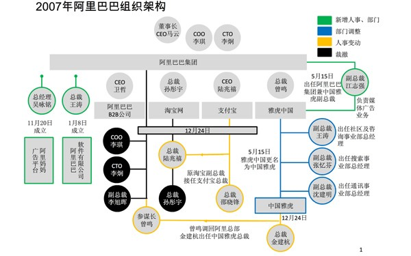
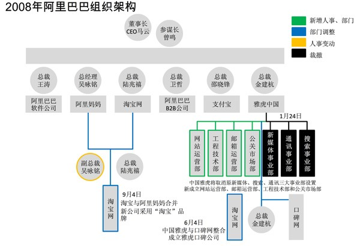
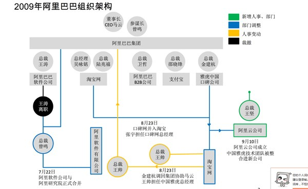
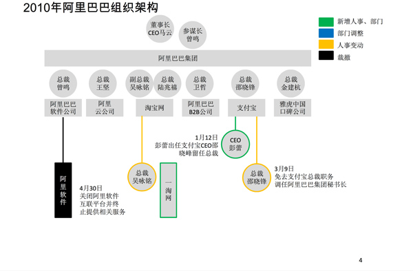
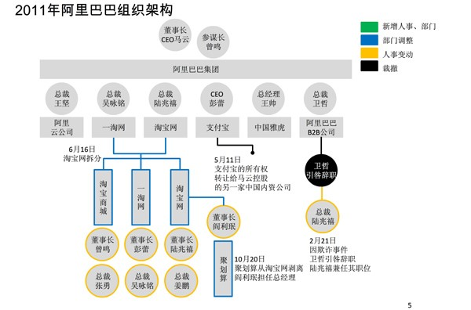
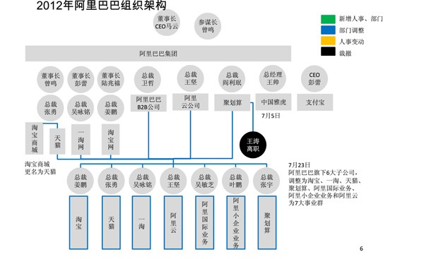
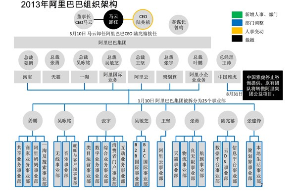

Just as the Ma Yun said, change is painful, but if we do not change, we will not have a chance of suffering in the future!
Since the beginning of the founding of the Alibaba, its innovation in the organizational structure has not been interrupted. As is known to us, the organization structure is the way used to achieve the goal of the organization. And the goal of the organization is to be determined by the strategy of the organization, and the organizational structure should be subordinated to the organizational strategy. If significant changes have taken place in the organizational strategy, the organizational structure should be adjusted accordingly to support the changes in the organizational strategy. And we will see the structure from 2007 to 2013 for a while.
As we know, Alibaba is a big group which has Taobao, Tmall, Juhuasuan, Amoy, Ali international business, small business and aliyun 7 business groups. And different business groups will take different organizational structure. Thus, in this essay, we will mainly research on the superstructure of Alibaba. By the way, the main departmentalization is focusing on products, and the main structure of it is project structure.
This is the Alibaba's 2007 superstructure chart.
Maybe I have to introduce some abbreviation of words. The chief operating officer(COO) is the official who makes the long-term strategy of the enterprise to supervise the executive work of the general managers of the branches of the branches. Mainly responsible for the daily operation of the company, auxiliary CEO work. Responsible for CEO, responsible for the operation and management of the enterprise. COO serves as president at the same time in some companies, but they are usually standing or senior vice presidents. And CTO，the chief technical officer, the top person in charge of the technology in the enterprise. The name began in the US in 1980s, and it started from many big companies. The main responsibility is to make scientific research achievements profitable.
When I firstly find this picture, I think it is too complicative, the chain of command is complicative, too. But if you study it carefully, you will find it reasonable. The point what we have to pay attention is that there are many presidents in the structure. And some business group has more than one presidents. What is interesting is that some presidents may control more than one business groups, which form a complex network. In that time, Alibaba just listed in Hongkong, which means that it might face with lots of difficulty. Therefore, they choose this complex structure network to keep their structure stable and make more cautious strategy. Obviously, the weakness of this structure is not flexible enough. There are too much presidents, which will lead to slow decision. Therefore, with the change of environment and some of other reasons, Alibaba meet a hug setback and its stock price plunged.
The above is the Alibaba's 2008 superstructure chart.
We could see that the structure become more simple and clear now. Each business groups have only one president, (Maybe there are Vice Presidents) and the decision making become more flexible. You can see that the most right-end branch, you can see that the business group “YAHOO” use the functional departmentalization. It allows specialization in particular products and services and managers can become experts in their parts. Besides, efficiencies from putting together similar specialties and people with common skills, knowledge, and orientations. However, it will make them have poor communication across functional areas and limit view of organizational goals.
As we see, the structure become a little complicative now, but the main structure is similar to 2008. The different is it increases the connection of some business group, such as “YAHOO” and “Taobao”, which exploits the advantages to the full.
This is the Alibaba's 2010 superstructure chart.
In 2010, the structure of Alibaba become simple again. We should know that there is some problem happen in Alibaba. The war between the Alibaba management and the large shareholders has begun. For the Alibaba, the internal contradictions have replaced the external contradictions as the main contradiction. Then Ma Yun, Yang Zhiyuan, Sun Zhengyi three party infighting, then VIE events, Alibaba management changes (Wei Zhe resignation) is the development of this event and continue to. Another layer of pressure is from the Alibaba in ecosystem, Taobao war City, Jingdong to give the Alibaba internal pressure rise.
Luckily, the structure of Alibaba plays an important role in this problem. We could see that the relationship between each business groups is weak, which means that their contradiction between leaders will not affect the production of Alibaba too much. However, they could not take advantages of their combination of business groups this year.
The above is the Alibaba's 2011 superstructure chart.
The structure of this year is similar to the last year. however, it increases the combination between “Amoy” and “Taobao”. Before we analysis it, we should know that Alibaba meet a lot of problem in online stores. Because of Suspected fraud, its credibility and integrity face with challenge. Therefore, Alibaba need to pay attention to the “Amoy” and “Taobao”, and increase many presidents to supervise the business group and make more cautious but effective strategy, which helps it tide over a crisis.
his is the Alibaba's 2012 superstructure chart
As we see, the structure seems to be complicative again. However, it is methodical and clear. After going through so many difficulties, the flourish of it is coming. In this year, it increases lots of business group. To make it beneficial to manage, it increases hierarchy of management.
Obviously, the structure bias to mechanical and will make the implement of strategy become more difficult. However, Alibaba develop into a large scale, which need to centralize to take the whole situation into account easily.
This is the Alibaba's 2013 superstructure chart
This is the Alibaba's 2013 superstructure chart
In this year, we could easily to find that the span of control levels up. Alibaba is divided into 25 business department. What we should take notice is that some department which is similar is managed by one people, which means that they could take advantage of cooperation of department. Besides, the 8 leaders of business department should report to 7 presidents of different business groups, which means that the we these presidents can see the” big picture” of Alibaba and make more reasonable strategy. However, this may make slow-decision and lack flexibility.
In my opinion, the bigger the enterprise is, the flexibility of it will decrease, because the strategy making will be more and more difficult and it will also difficult to implement and change something. However, with the change of organizational structure, Alibaba tide over the crisis one by one and successfully adapt to the changing environment, which is the most important thing that each management should learn. In a word, changing to adapt to change.
Reference:
the meaning of COO and CTO:
[1] https://baike.baidu.com/item/%E9%A6%96%E5%B8%AD%E8%BF%90%E8%90%A5%E5%AE%98/739202?fr=aladdin&fromid=1272371&fromtitle=COO
[2] https://baike.baidu.com/item/cto/2644733
the charts come from:
[3] http://www.thepaper.cn/newsDetail_forward_1405922